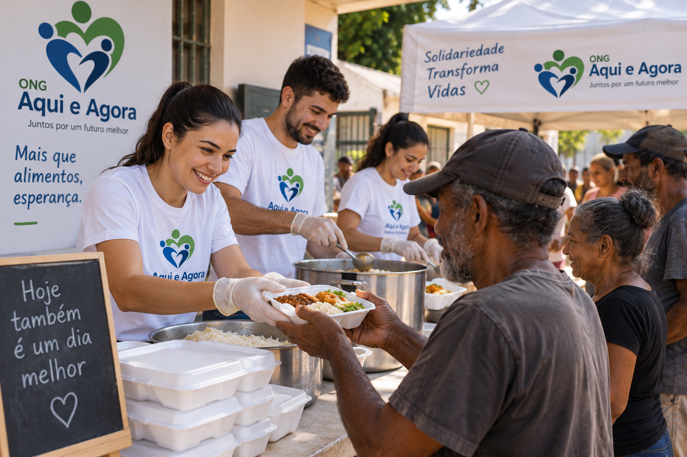

Alimentando Esperanças

O projeto Alimentando Esperanças realiza campanhas de arrecadação e distribuição de alimentos para famílias em situação de vulnerabilidade.
Objetivo
Combater a insegurança alimentar e ajudar famílias que enfrentam dificuldades financeiras.
Impacto
- 300 famílias beneficiadas.
- Mais de 2 toneladas de alimentos arrecadadas.
- 10 campanhas realizadas.